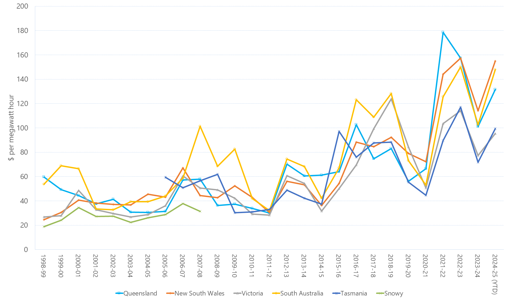
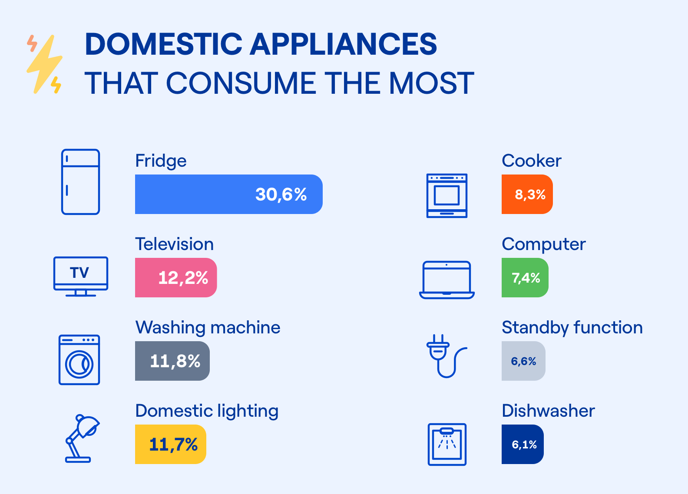
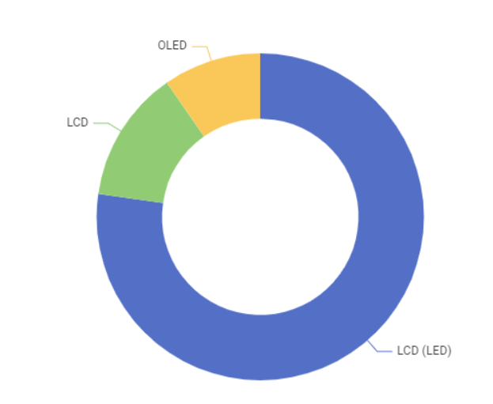
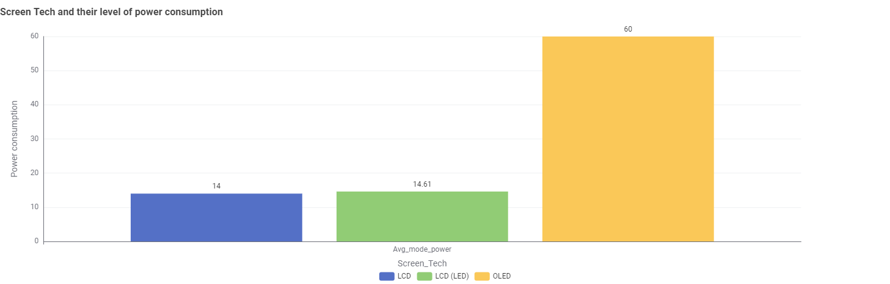
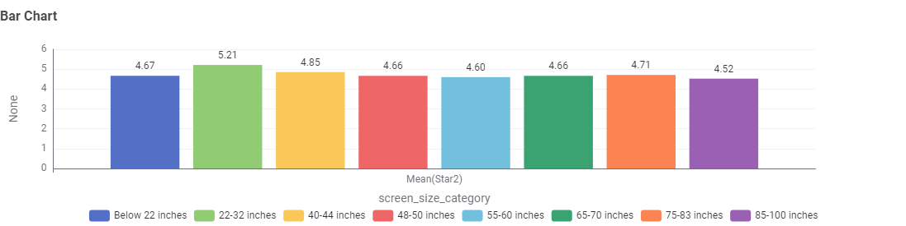
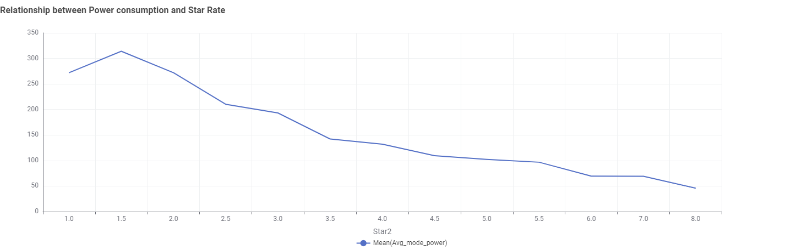
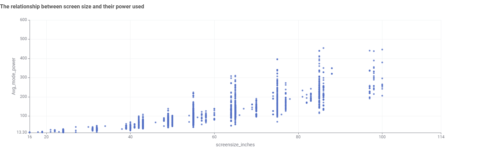

On average, a new television uses more energy than a fridge. Many homes also have more than one television, increasing the load on the electricity bill. Taking time to choose your next television wisely and using it efficiently can decrease your energy use and save you money.
Energy Price Is Going Up

Source: Australian Energy Regulator
The price of electricity is going up. The average price of electricity in Australia has increased by 56% over the past decade. The price of electricity is expected to continue to rise. This is due to the increasing cost of generating electricity, the cost of maintaining the electricity network, and the cost of government environmental schemes.
According to Endesa, TV is one of the most power consumped appliances in the house

Source: How can you calculate the electricity a house consume? Endesa.
Therefore, to keep the cost of electricity down, it is important to use energy-efficient appliances and equipment. Here are some key things to consider when choosing an energy-efficient television.
77.25 % screen technology used out there is LCD (LED)

Which screen tech is the most prevalent?
LCD is least power consumed screen technology

Which screen tech consume the least amount of Power?
65-70 inches screen sizes of TV are being used the most

Which is the most prevalent screen size?
22-32 inches are the most highly rated

Which screen size is the most highly rated?
The higher the Star Rate the lower the Power Consumption Rate

The relationship between Power Consumption and Star Rate
Power Consumption Rate is higher in larger screen sizes

The relationship between Power Consumption and Screen sizes